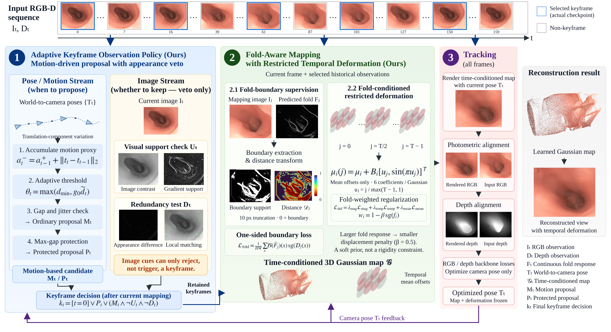
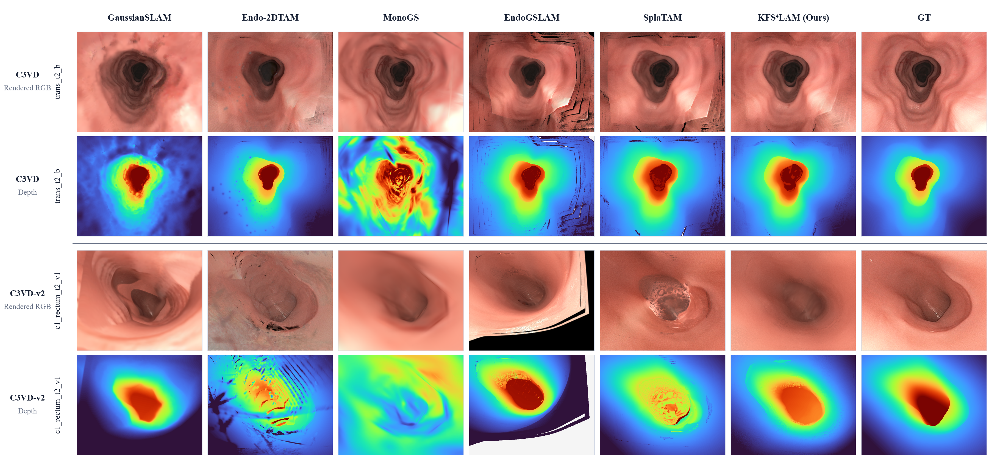

Observe selectively. Reconstruct continuously.
Motion-driven keyframe proposals, appearance-based redundancy suppression and fold-boundary supervision connect observation selection with Gaussian mapping. SplaTAM additionally uses restricted temporal deformation in the released reconstructions.

Quantitative results
Common evaluation pool: 14 C3VD and 11 C3VD-v2 sequences. Trajectory and rendering protocols remain backbone-specific; depth values retain each source evaluator’s scale.
| Method | m ATE ↓ | m ARE ↓ | RPE-t ↓ | RPE-r ↓ | PSNR ↑ | SSIM ↑ | LPIPS ↓ | Depth RMSE ↓ |
|---|
The results are mixed across metrics and datasets; improvements are not uniform. The checkpoint audit distinguishes intended configuration flags from parameters present in the completed runs.
Qualitative comparisons

Camera motion & reconstruction
Left: estimated camera motion and trajectory. Right: the synchronized RGB view rendered from the final Gaussian map. These are final-map replays, not online map growth.
Each video synchronizes camera and RGB by processed-frame index. The two backbones have different processed-frame counts because EndoGSLAM excludes its held-out split. Playback is 15 fps, not a claim of real-time SLAM throughput. Use the fullscreen control to inspect details.
Reproduce the reconstructions
The Release is organized by sequence: 25 KFS⁴LAM reconstruction archives. Each archive contains Gaussian parameters, estimated poses, intrinsics, keyframe indices and a portable configuration. The archives also contain temporal deformation coefficients. Rendering saved poses does not require retraining or the source dataset.
python render_checkpoint.py --backbone splatam \ --checkpoint params.npz --frames all --stride 8 --output rendered
Install the code release dependencies first. RGB-D and fold responses are required for a new SLAM run; the original RGB-D dataset is required for evaluation against ground truth.
Reconstruction archives are distributed in the repository Release. The page contains local figures and videos.